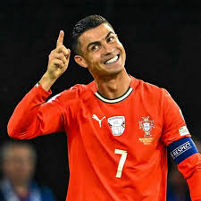
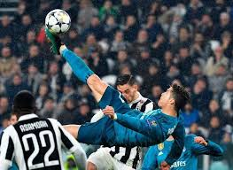
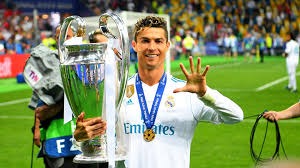
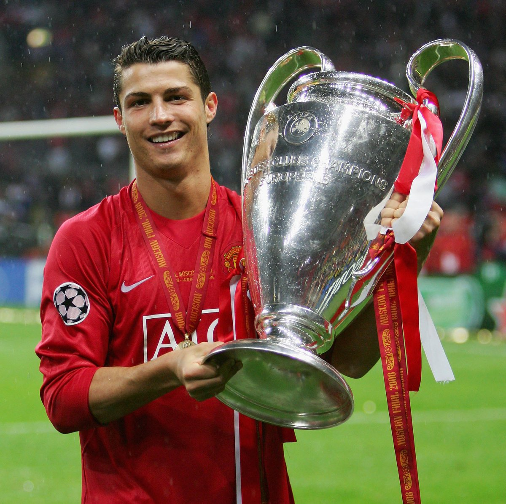
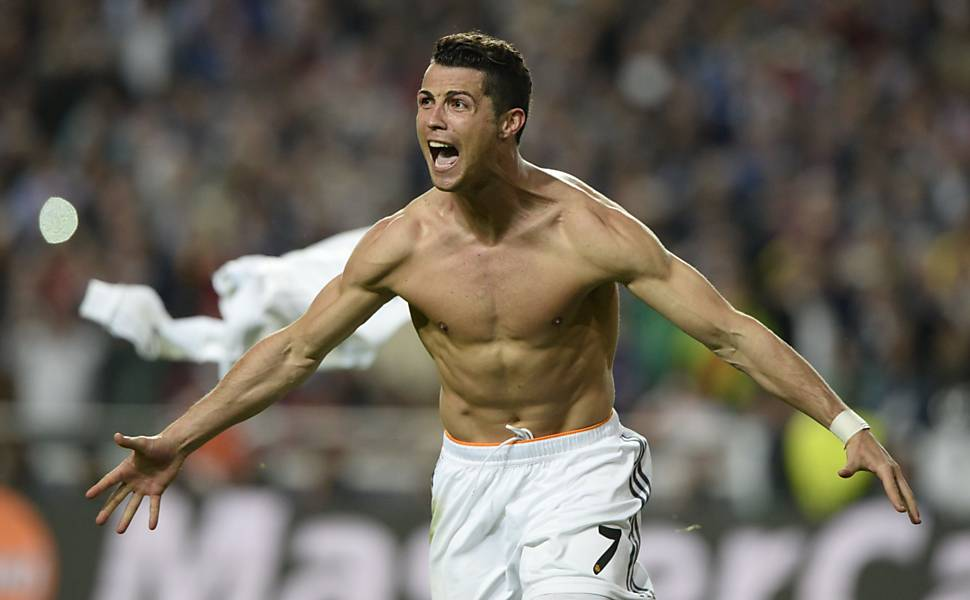

THE GOAT

O Maior Artilheiro da História
CR7 é o maior artilheiro da história do futebol em jogos oficiais, ultrapassando a marca dos 900 gols na carreira. Ele também é o maior artilheiro da história das seleções

O dono da Champions League
Ele não apenas ganhou a competição de clubes mais difícil do mundo 5 vezes, como também é o maior artilheiro e o maior assistente da história da Liga dos Campeões.
Real Madrid

É o maior goleador da história do clube, com 450 gols em 438 partidas (média superior a um gol por jogo). Venceu 4 de suas 5 Bolas de Ouro enquanto jogava pelo Real Madrid.
EL BICHO

2008: O Ano da Primeira Coroa Real
O ano de 2008 ficou marcado na história do futebol como o momento em que Cristiano Ronaldo deixou de ser uma promessa para se tornar o melhor jogador do planeta. Atuando pelo Manchester United, ele liderou os Red Devils na conquista da Premier League e da UEFA Champions League, terminando a temporada com impressionantes 42 gols.
Sua dominância foi tão absoluta que ele varreu quase todos os prêmios individuais possíveis:
- FIFA World Player of the Year
- Ballon d'Or (Bola de Ouro)
- Chuteira de Ouro da UEFA
- Melhor Jogador de Clubes da UEFA
- PFA Player of the Year
Pela primeira vez, CR7 foi eleito o melhor jogador do mundo pela FIFA, recebendo o troféu das mãos de Pelé.
A prestigiada revista France Football confirmou o favoritismo de Cristiano, concedendo a ele sua primeira de cinco Bolas de Ouro.
Com 31 gols apenas na Premier League, ele foi o maior artilheiro das ligas europeias naquela temporada.
Além de artilheiro da Champions League (com 8 gols, incluindo um na final), ele foi eleito o melhor atleta da competição.
Pelo segundo ano consecutivo, seus colegas de profissão na Inglaterra o elegeram o melhor jogador da liga inglesa.

2013/2014: A Máquina de 69 Gols e "La Décima"
O período entre 2013 e 2014 representou o auge físico e técnico de Cristiano Ronaldo no Real Madrid. No ano civil de 2013, ele atingiu a marca sobre-humana de 69 gols em apenas 59 jogos, o maior número de toda a sua carreira. Esse desempenho implacável embalou a equipe para 2014, culminando na histórica conquista da "La Décima" (a 10ª Liga dos Campeões do clube), onde ele estraçalhou os recordes do torneio.
Sua dominância foi tão absoluta que ele varreu quase todos os prêmios individuais possíveis:
- Ballon d'Or (Bola de Ouro da FIFA)
- A "La Décima" Champions League
- Recorde Absoluto da Champions League
- Chuteira de Ouro da Europa
- Melhor Jogador da UEFA na Europa
Após o ano mágico de 69 gols, CR7 retomou o topo do mundo em uma cerimônia emocionante, marcando o fim do domínio de Messi e iniciando sua própria dinastia no Real Madrid.
Liderou o Real Madrid à tão sonhada e obsessiva 10ª taça europeia do clube, coroando a campanha com um gol na grande final contra o rival Atlético de Madrid.
Com 17 gols na edição 2013/14, ele estabeleceu o recorde histórico de maior número de gols em uma única temporada da competição — um feito que pertence a ele até hoje.
Com 31 gols na La Liga (Campeonato Espanhol), ele foi o maior artilheiro das ligas europeias na temporada, provando sua letalidade no torneio nacional.
Com o título e o recorde de gols, foi a escolha unânime e óbvia para receber o prêmio de melhor jogador do continente europeu.